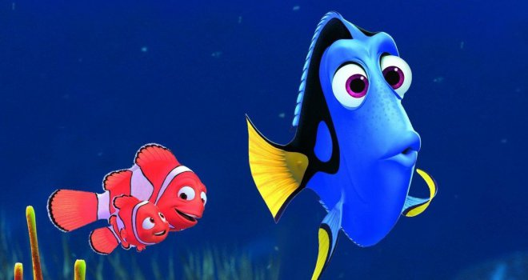

Finding Nemo คือเรื่องราวการผจญภัยอันน่าตื่นเต้นและสนุกสนานของ "มาร์ลิน" ปลาการ์ตูนผู้หวงลูกจนเกินเหตุ (พากย์โดย อัลเบิร์ต บรู๊คส์) และลูกชายของเขา "นีโม" (พากย์โดย อเล็กซานเดอร์ กูลด์) ที่พลัดหลงกันในแนวปะการังใหญ่ เมื่อนีโมถูกจับตัวไปจากมหาสมุทรซึ่งเป็นบ้านของเขา ไปอยู่ในตู้ปลาในห้องทำงานของหมอฟันคนหนึ่ง ด้วยการช่วยเหลือของเพื่อนร่วมทางอย่าง ดอรี่ (พากย์โดย เอลเลน ดีเจเนอเรส) ปลาบลูแทงจ์ผู้เป็นมิตรแต่ความจำสั้น มาร์ลิน ได้ออกเดินทางสู่เส้นทางสุดอันตรายด้วยความพยายามอันยิ่งใหญ่ทุกวิถีทางเพื่อช่วยเหลือลูกชายของเขา ที่รวบรวมความกล้ากับแผนการหาทางกลับบ้านด้วยตัวเอง
